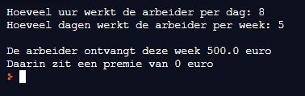
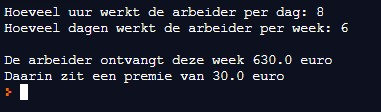

Een ploegbaas moet het weekloon van zijn arbeiders bepalen om ze wekelijks te kunnen uitbetalen. Hiervoor weet hij dat een arbeider aan €12.5 per uur werkt. Schrijf een programma dat het aantal uur dat de arbeider per dag werkt en het aantal dagen dat de arbeider per week werkt, vraagt. Wanneer de arbeider meer dan 5 dagen per week werkt, ontvangt hij een extra premie van 5% bovenop zijn loon.
Maak in je programma twee contstanten:
Hieronder vind je de schermafdruk van een uitvoering van het programma:

